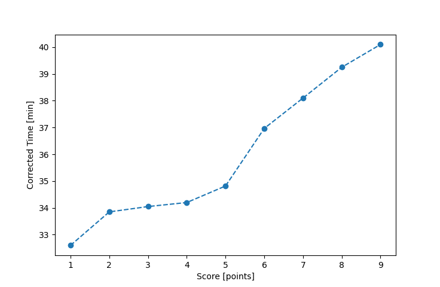

| Wind: | 4 (BFT) |
|---|---|
| RC: | Mike_F, Nedra_F, Anita_M |
| Date: | May 22, 2016 |
| Notes: | M3 170 |
| Rank / Score | Name | Boat | Input Time [mm:ss] | Input Offset [mm:ss] | Race Time [mm:ss] | Race Time [s] | Handicap | Corrected Time [s] | Corrected Time [mm:ss] |
|---|---|---|---|---|---|---|---|---|---|
| 1.0 | Rod_H | PUF | 35:28 | 00:00 | 35:28 | 2128 | 1.08800 | 1956 | 32:36 |
| 2.0 | Art_M | SWSX | 32:03 | 00:00 | 32:03 | 1923 | 0.94700 | 2031 | 33:51 |
| 3.0 | Ron_F | F5 | 32:27 | 00:00 | 32:27 | 1947 | 0.95300 | 2043 | 34:03 |
| 4.0 | Bill_P | SF | 33:27 | 00:00 | 33:27 | 2007 | 0.97800 | 2052 | 34:12 |
| 5.0 | David_Bu | SF | 34:03 | 00:00 | 34:03 | 2043 | 0.97800 | 2089 | 34:49 |
| 6.0 | Barry_O | HLR14 | 40:04 | 00:00 | 40:04 | 2404 | (1.08400) | 2218 | 36:58 |
| 7.0 | Stacy_O | SWSX | 36:05 | 00:00 | 36:05 | 2165 | 0.94700 | 2286 | 38:06 |
| 8.0 | Lewis_V | BCN | 33:52 | 00:00 | 33:52 | 2032 | 0.86300 | 2355 | 39:15 |
| 9.0 | Pat_B | WF | 36:17 | 00:00 | 36:17 | 2177 | 0.90500 | 2406 | 40:06 |

Application Notes:
All race results are unofficial
View source code at https://github.com/cessnao3/portsmouthracecalc/